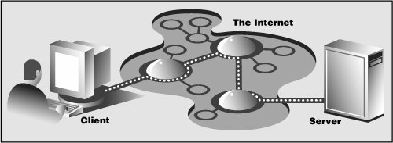
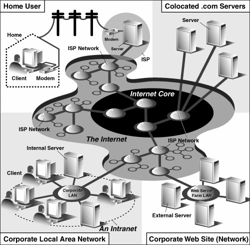

20.1. IntroductionThis introductory chapter on Web programming will give you a quick and high-level overview of the kinds of things you can do with Python on the Internet, from Web surfing to creating user feedback forms, from recognizing Uniform Resource Locators to generating dynamic Web page output. 20.1.1. Web Surfing: Client/Server Computing (Again?!?)Web surfing falls under the same client/server architecture umbrella that we have seen repeatedly. This time, Web clients are browsers, applications that allow users to seek documents on the World Wide Web. On the other side are Web servers, processes that run on an information provider's host computers. These servers wait for clients and their document requests, process them, and return the requested data. As with most servers in a client/server system, Web servers are designed to run "forever." The Web surfing experience is best illustrated by Figure 20-1. Here, a user runs a Web client program such as a browser and makes a connection to a Web server elsewhere on the Internet to obtain information. Figure 20-1. Web client and Web server on the Internet. A client sends a request out over the Internet to the server, which then responds with the requested data back to the client. Clients may issue a variety of requests to Web servers. Such requests may include obtaining a Web page for viewing or submitting a form with data for processing. The request is then serviced by the Web server, and the reply comes back to the client in a special format for display purposes. The "language" that is spoken by Web clients and servers, the standard protocol used for Web communication, is called HTTP, which stands for HyperText Transfer Protocol. HTTP is written "on top of" the TCP and IP protocol suite, meaning that it relies on TCP and IP to carry out its lower-level communication functionality. Its responsibility is not to route or deliver messagesTCP and IP handle thatbut to respond to client requests (by sending and receiving HTTP messages). HTTP is known as a "stateless" protocol because it does not keep track of information from one client request to the next, similar to the client/server architecture we have seen so far. The server stays running, but client interactions are singular events structured in such a way that once a client request is serviced, it quits. New requests can always be sent, but they are considered separate service requests. Because of the lack of context per request, you may notice that some URLs have a long set of variables and values chained as part of the request to provide some sort of state information. Another alternative is the use of "cookies"static data stored on the client side which generally contain state information as well. In later parts of this chapter, we will look at how to use both long URLs and cookies to maintain state information. 20.1.2. The InternetThe Internet is a moving and fluctuating "cloud" or "pond" of interconnected clients and servers scattered around the globe. Communication between client and server consists of a series of connections from one lily pad on the pond to another, with the last step connecting to the server. As a client user, all this detail is kept hidden from your view. The abstraction is to have a direct connection between you the client and the server you are "visiting," but the underlying HTTP, TCP, and IP protocols are hidden underneath, doing all of the dirty work. Information regarding the intermediate "nodes" is of no concern or consequence to the general user anyway, so it's good that the implementation is hidden. Figure 20-2 shows an expanded view of the Internet. Figure 20-2. A grand view of the Internet. The left side illustrates where you would find Web clients while the right side hints as to where Web servers are typically located.As you can see from the figure, the Internet is made up of multiply-interconnected networks, all working with some sense of (perhaps disjointed) harmony. The left half of the diagram is focused on the Web clients, users who are either at home dialed-in to their ISP (Internet Service Provider) or at work on their company's LAN (Local Area Network). The right-hand side of the diagram concentrates more on Web servers and where they can be found. Corporations with larger Web sites will typically have an entire "Web server farm" located at their ISPs. Such physical placement is called colocation, meaning that a company's servers are "co-located" at an ISP along with machines from other corporate customers. These servers are either all providing different data to clients or are part of a redundant system with duplicated information designed for heavy demand (high number of clients). Smaller corporate Web sites may not require as much hardware and networking gear, and hence, may only have one or several colocated servers at their ISP. In either case, most colocated servers are stored with a larger ISP sitting on a network backbone, meaning that they have a "fatter" (meaning wider) and presumably faster connection to the Internetcloser to the "core" of the Internet, if you will. This permits clients to access the servers quicklybeing on a backbone means clients do not have to hop across as many networks to access a server, thus allowing more clients to be serviced within a given time period. One should also keep in mind that although Web surfing is the most common Internet application, it is not the only one and is certainly not the oldest. The Internet predates the Web by almost three decades. Before the Web, the Internet was mainly used for educational and research purposes. Most of the systems on the Internet run Unix, a multi-user operating system, and many of the original Internet protocols are still around today. Such protocols include telnet (allows users to log in to a remote host on the Internet and still in use today), FTP (the File Transfer Protocol that enables users to share files and data via uploading or downloading and also still in use today), Gopher (the precursor to the Web search enginea "gopher"-like piece of software that "tunneled the Internet" looking for the data that you were interested in), SMTP or Simple Mail Transfer Protocol (the protocol used for one of the oldest and most widely used Internet applications: electronic mail), and NNTP (News-to-News Transfer Protocol). Since one of Python's initial strengths was Internet programming, you will find support for all of the protocols discussed above in addition to many others. We differentiate between "Internet programming" and "Web programming" by stating that the latter pertains only to applications developed specifically for Web applications, i.e., Web clients and servers, our focus for this chapter. Internet programming covers a wider range of applications, including some of the Internet protocols we previously mentioned, such as FTP, SMTP, etc., as well as network and socket programming in general, as we discussed in a previous chapter. |